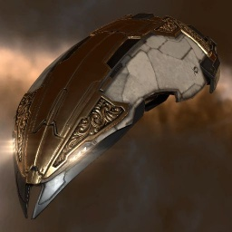

Impairor

Тип корабля: Корвет
Государство/Организация: Amarr
Описание
Массовый выпуск корветов типа «Импэйрор» был налажен Амаррской Империей много десятков лет назад. Они являются самыми распространенными кораблями в пределах амаррских границ, и равным образом используются в качестве обычных торговых судов и малотоннажных транспортов для перевозки рабов.
Характеристики
Корпус
Запас прочности корпуса: 200 ед.
Вместимость грузового отсека: 115 м^3
Объем отсека для дронов: 5 м^3
Пропускная способность канала телеуправления: 5 Мбит/с
Масса: 1.148.000 кг
Занимает объем: 28.100,0 м^3 (2.500,0 м^3 в разобранном виде)
Влияние инертности конструкции: 4,45x
Сопротивление корпуса ЭМ-урону: 33 %
Сопротивление корпуса термальному урону: 33 %
Сопротивление корпуса кинетическому урону: 33 %
Сопротивление корпуса фугасному урону: 33 %
Броня
Запас прочности брони: 200 ед.
Сопротивление брони ЭМ-урону: 50 %
Сопротивление брони термальному урону: 35 %
Сопротивление брони кинетическому урону: 25 %
Сопротивление брони фугасному урону: 20 %
Щит
Запас прочности щита: 125 ед.
Влияние на время регенерации щитов: 8 минут и 39 секунд
Сопротивление щита ЭМ-урону: 0 %
Сопротивление щита термальному урону: 20 %
Сопротивление щита кинетическому урону: 40 %
Сопротивление щита фугасному урону: 50 %
Сопротивление средствам РЭП
Сопротивление накопителя нейтрализирующему воздействию: 0 %
Сопротивление воздействию генератору стазис-поля: 0 %
Сопротивление воздействию помех на наводку вооружения: 0 %
Накопитель энергии
Емкость накопителя: 140,0 ГДж
Время востановления заряда: 70 с.
Целеуказания
Максимальная дальность захвата цели: 25,5 км
Максимальное количество захваченных целей: 3
Радиус сигнатуры: 50 м
Разрешающая способность систем захвата цели: 485 мм
Эффективность радарной системы: 6 ед.
Эффективность магнитнометрической системы: -
Эффективность гравиметрической системы: -
Эффективность ладарной системы: -
Двигательная установка
Максимальная скорость: 300 м/с
Скорость в варп-режиме: 3,0 а.е./с.
Служба оснащения
Мощность ЦПУ: 120,0 Тф
Мощность реактора: 26 МВт
Точки монтажа орудийных установок: 2
Точки монтажа пусковых установок: 1
Разъемы большой мощности: 2
Разъемы средней мощности: 2
Разъемы малой мощности: 2